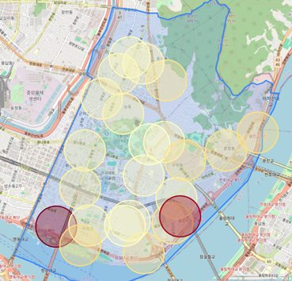
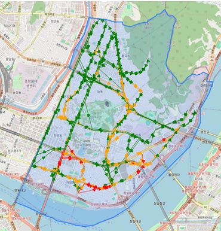
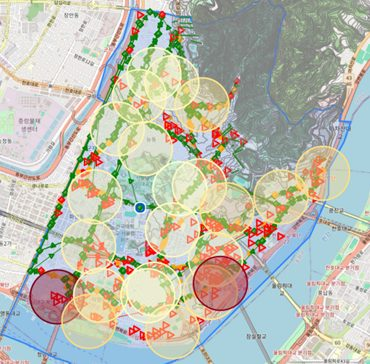
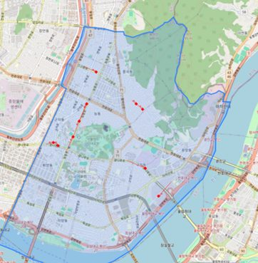
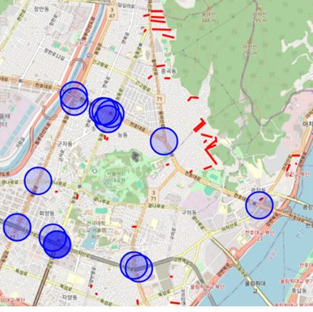
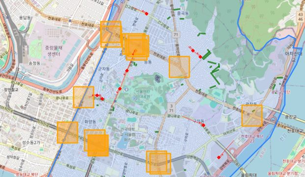

도로 결빙 위험지수 설계
결빙·경사·이용객 노출을 통합한 위험지수로, 열선을 먼저 깔아야 할 도로를 제안한 분석
- 열선을 어디에 먼저 깔지 정해야 하는데, 기존 정책은 사고 빈도만 봤습니다. 사고가 적은 곳이 안전한 곳은 아닙니다.
- 경사·결빙·이용객을 결합해 위험지수를 만들고, 여기에 노출을 곱해 위험하면서 사람이 많은 곳을 찾았습니다.
- 산출한 상위 10% 구간이 실제 민원 다발 구간과 80% 이상 일치해, 지표의 타당성을 외부 데이터로 확인했습니다.


문제 🤔
실제 위험이 공간적으로 어떻게 분포하는지를 측정 가능한 지표로 정의하고, 그 지표가 맞다는 것을 외부 기준으로 보여야 했습니다.
접근 🛠
- 도로를 행정 구획이 아니라 정류장–정류장(약 300m) 단위로 재정의했습니다. 도로망 노드-에지 대신 실제 통행 단위에 맞춘 것입니다.
- 세 변수를 Min-Max 정규화한 뒤 가중 합했습니다 —
RiskIndex = 0.4×경사 + 0.3×결빙 + 0.3×이용객. - 여기에 사회적 노출을 곱해
FinalRisk = Hazard × Exposure로 최종 위험도를 산출했습니다. - 위험 상위 10% 구간을 뽑고, 그중 열선 미설치이면서 사고 다발인 구간을 최종 후보로 좁혔습니다.
결과 📈
위험 상위 10% 도로 구간을 자동 산출했고, 그 결과가 실제 민원 다발 구간과 80% 이상 일치해 지표의 타당성을 외부 데이터로 확인했습니다. 정책 담당자가 바로 읽을 수 있는 위험지도로 제공했습니다.
금융 직무와의 연결 🎯
- 다요인 리스크 지표 설계 — 여러 변수를 정규화·가중 결합해 하나의 위험도로 만드는 작업은 신용평가 모형과 같은 구조입니다.
- Hazard × Exposure — 위험도와 노출을 곱해 실제 피해 규모로 환산하는 방식은 여신 익스포저 계산과 같은 사고입니다.
- 외부 기준 검증 — 산출 결과를 독립적인 실제 데이터(민원)와 대조해 타당성을 확인했습니다. 모형 검증의 기본입니다.
막혔던 지점과 그때의 판단 🚩
가중치를 정당화할 방법이 없었다
0.4 / 0.3 / 0.3은 결국 우리가 정한 값입니다. 전문가 설문이나 사고 회귀분석으로 정하는 방법도 있었지만 데이터가 없었습니다. 대신 결과를 외부 기준으로 검증하는 쪽을 택했습니다.
위험한 곳과 위험하면서 사람이 많은 곳은 다르다
경사가 급하고 결빙이 잦은 곳만 뽑으면 사람이 거의 안 다니는 골목이 상위권에 올라옵니다. 정책은 한정된 예산으로 열선을 까는 일이라 피해 규모가 기준이어야 했습니다.
더 자세히
관심 있는 항목만 펼쳐 보세요.
이 프로젝트가 시작된 배경
겨울철 도로 결빙 사고를 줄이려면 열선을 깔아야 하는데 예산은 한정돼 있습니다. 그런데 기존 정책은 결빙 사고 빈도만 반영했습니다. 사고가 적게 난 곳이 안전한 곳은 아닙니다 — 통행이 적어서일 수도 있습니다.
설계 결정과 근거 3
가중합이 아니라 곱으로 결합했다
위험 요인과 노출 중 하나라도 0이면 실제 위험도 0이어야 합니다. 덧셈으로는 이걸 표현할 수 없습니다. 경사가 아무리 급해도 아무도 안 다니면 열선을 깔 이유가 없습니다.
가중치를 정당화하는 대신 결과를 외부 기준으로 검증했다
0.4/0.3/0.3은 물리적 위험·반복성·피해 규모를 근거로 휴리스틱하게 배분한 값입니다. 회귀로 재추정할 데이터가 없어서, 대신 산출 결과를 실제 민원 다발 구간과 대조했고 80% 이상 겹쳤습니다.
분석 단위를 정류장 간격으로 바꿨다
행정동은 너무 크고 도로망 에지는 너무 잘게 쪼개집니다. 광진구는 정류장 분포가 균일해서 약 300m 단위가 맞았습니다.
데이터
화면 · 시각화 더 보기 5





이 결과가 틀렸을 수 있는 지점
- 가중치를 회귀로 재추정하지 못했습니다. 휴리스틱 배분이라는 점을 명시했습니다.
- 경사·결빙·이용객이 서로 상관될 수 있어(다중공선성) 가중치 해석이 왜곡될 여지가 있습니다. 검토하지 못했습니다.
- 가중합 모델은 상관을 가정할 뿐 인과를 증명하지 않습니다. "결빙이 사고를 유발한다"가 아니라 위험도 추정입니다.
- 300m 단위는 정류장 분포가 균일한 광진구라서 맞았습니다. 다른 지역은 밀도에 따라 조정이 필요합니다.
금융 직무 연결 더 보기
- 한계 명시 — 다중공선성 미검토, 상관과 인과의 구분을 보고서에 적었습니다.
회고
지표를 만드는 일의 핵심은 가중치를 고르는 게 아니라 그 지표가 맞았는지 검증할 외부 기준을 확보하는 것이었습니다. 민원 데이터가 그 역할을 했습니다.